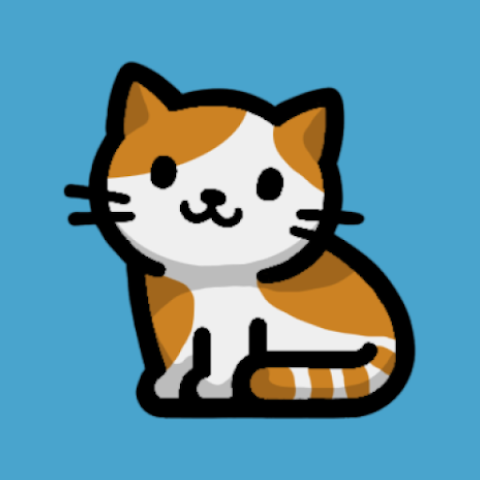

xato.io apps
Pitch Tuner
Live chroma spectrogram and note readout, straight from your microphone.

Catdoku
Embark on a journey through our specially crafted sudoku game, designed for cat lovers and puzzle enthusiasts.
Voice Reverser
Voice Reverser lets you easily record audio and play it backwards with just a few taps.